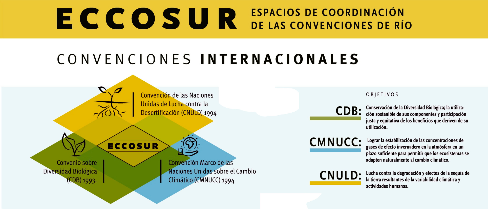

Zonas de acción: Eccosur busca apoyar y alentar a los gobiernos locales de Lavalleja, Maldonado, Rocha y Treinta y Tres a fortalecer y mejorar las prácticas ambientales en territorio. Busca mejorar las capacidades de los actores locales (organizaciones de la sociedad civil y productores familiares) para afrontarde manera efectiva la gestión ambiental y apoyar iniciativas comunitarias innovadoras que aborden las problemáticas de cambio climático, biodiversidad y degradación de la tierra.
Eccosur también busca apoyar el abordaje de las 3 temáticas en los ámbitos de la educación ambiental.
Público Objetivo: Gobiernos departamentales, organizaciones de la sociedad civil y grupos de productores familiares de Lavalleja, Maldonado, Rocha y Treinta y Tres.
Serie de Divulgación:
Mapas:
Contacto y organización:
Integrantes de la Comisión Directiva: